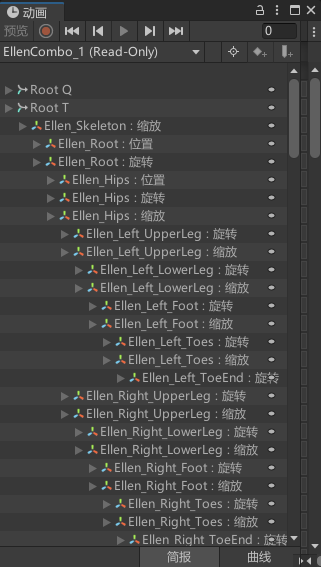
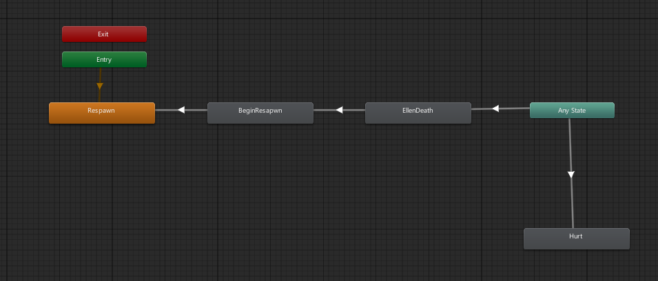
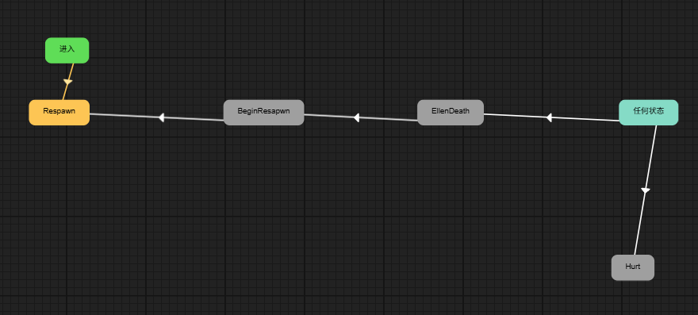
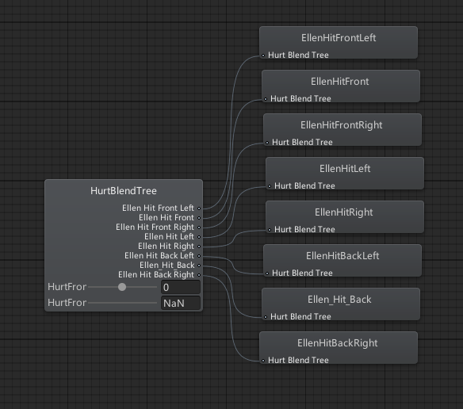

核心原理 · 动画导出
.lani → ② Animator 状态机将片段组织为状态与转换 → ③ SpriteRenderer 色彩动画为特例，分流至 2D 的 .mc → ④ 能力边界：不导出 BlendTree。
Respawn / EllenDeath（各直接挂一个 clip）、
BeginResapwn、Hurt（一个 BlendTree）。导出后：Death、Spawn 两个动画正常，Hurt 因是混合树导成空状态。
基础——将各属性动画曲线按类型分类，写入 .lani 二进制；后续状态机组织的即此处产出的动画片段。
Transform 类曲线按 propertyName 归到一个 KeyFrameValueType，再写进 .lani 二进制（path 索引表 + propertyName 索引表 + 关键帧）；
材质类（Color / MaterialSwap）则按 shader 属性配置表匹配分发，并非纯属性名命中。
坐标系转换在曲线层完成（左手系 → 右手系），各属性按下表对相应分量取负，并非整套 xyz 重排（与 mesh 页 的 X 镜像同源）。

.lani 的关键帧。| Unity 属性 | Laya 类型 | 分量顺序 | 坐标转换 |
|---|---|---|---|
m_LocalPosition | Position | x, y, z | X 取负 |
m_LocalScale | Scale | x, y, z | 无※ |
localEulerAnglesRaw | RotationEuler | x, y, z | Y、Z 取负 |
m_LocalRotation | Rotation（四元数） | x, y, z, w | X、W 取负 |
material._Color | Color | r, g, b, a（缺 a 默认 1.0） | 无 |
m_Materials / sharedMaterials | MaterialSwap（=11） | 材质引用切换（.lmat 路径） | |
※ 普通 3D 节点 Scale 不做任何取负。只有挂了 SpriteRenderer 的节点（其静态 localScale.x 也被取负）才会把 scale.x 关键帧取负，以与静态变换保持一致。
将上一步产出的片段组织为「状态 + 转换」的状态机。
每层（layer）导出状态列表 + 转换。状态：speed / clipStart=0 / clipEnd=1 / 位置 x,y /
clip（指向 .lani 的 uuid）/ id。取 clip 用 state.motion as AnimationClip。
转换（soloTransitions）：exitByTime / exitTime / transduration / transstartoffset / solo / mute；目标状态 null 或不存在 → 警告跳过。

Respawn（默认）/ BeginResapwn / EllenDeath / Hurt + Any State。
Hurt 的 BlendTree 内容例外，见 ④）
特例——精灵的色彩动画不走 3D 路径，分流至 2D 的 .mc。
子物体含 SpriteRenderer 色彩动画时，若只有色彩动画，3D Animator 跳过，改由 Animator2D + .mc（LAYAANIMATION2D:01）导出；
3D / 2D 动画都有时，给状态挂同步脚本（syncScriptUuid）保持播放同步。细节见 sprite-2d 页。
能力边界——当前版本不导出 BlendTree。 插件不导出 Animator 的 BlendTree（混合树）。状态机中 motion 为 BlendTree 的状态会被导成空状态（无动画）， 混合树内引用的 clip 也不会随之导出。其余「直接挂单个 AnimationClip」的状态（如本例 Death / Spawn）导出正常。

Hurt 状态是 HurtBlendTree（含 8 个方向受击）——这类混合树及其内部 clip 不会被导出，Hurt 在 Laya 端为空状态。